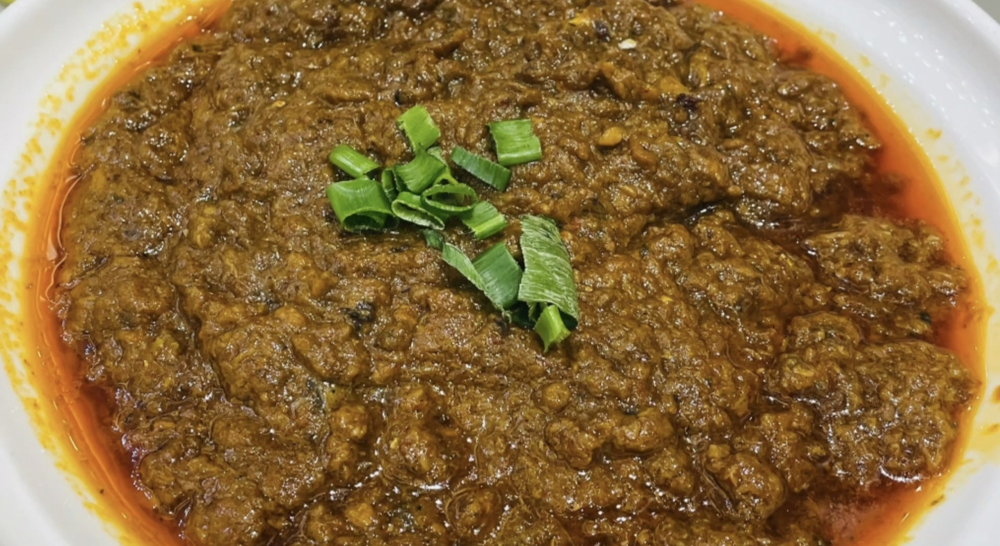
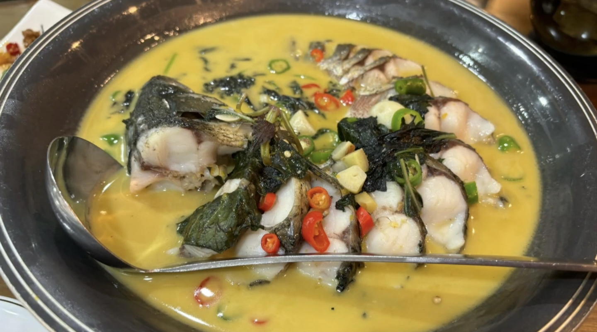
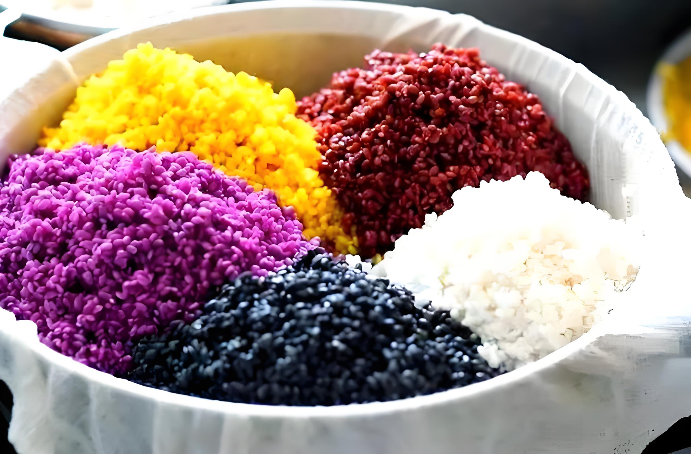
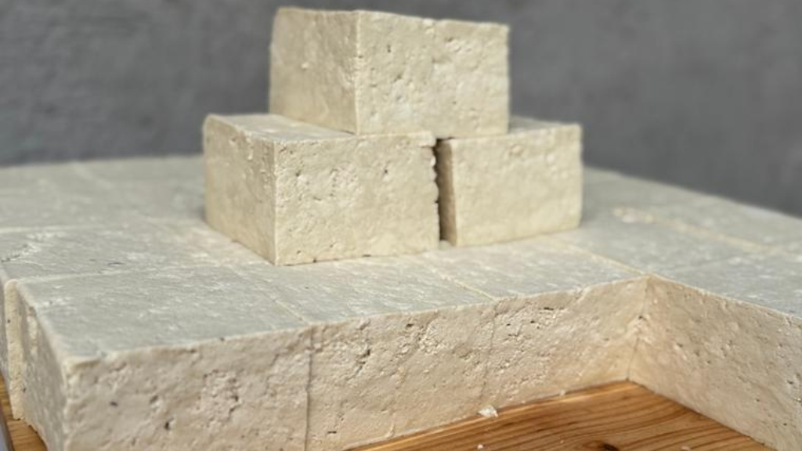
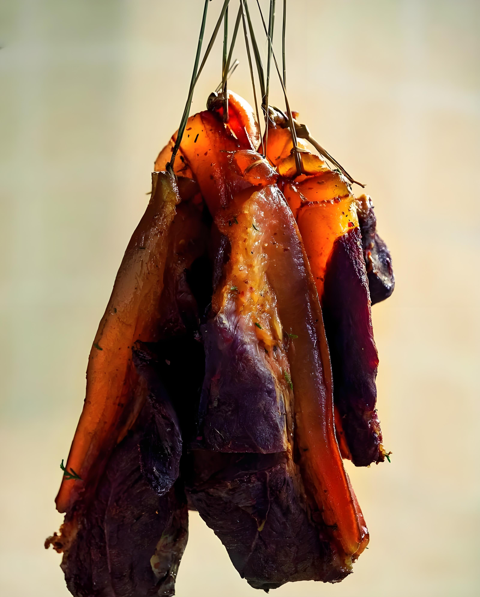

山水秘境，水乡归兰，领略布依风情舌尖与自然之美
归兰水乡地处贵州黔南，山清水秀、溪流纵横，是原生态布依水乡秘境。这里食材天然纯净，美食以布依风味为主，鲜、香、酸、醇，风景与舌尖美味相融，尽显黔南原生态水乡风情。

归兰鱼酱是布依特色招牌美味，选用溪涧鲜活小鱼秘制发酵，酱香浓郁、鲜辣入味，拌饭、炒菜皆绝佳，是归兰水乡最具代表性的乡土滋味。

归兰清水鱼取自山溪活鱼，清汤炖煮或清蒸，鱼肉鲜嫩清甜、无腥味，最大保留原生态鲜味，是水乡最地道的养生河鲜美食。

归兰布依花米饭用天然植物染色，色彩鲜艳、米香软糯，带着天然草木清香，是布依族节庆必备，色香味俱全的传统美食。

归兰酸汤豆腐以山泉酸汤点制，豆香醇厚、细嫩滑口，煮火锅、凉拌皆美味，酸香开胃，尽显水乡农家质朴风味。

归兰腊肉选用本地土猪，布依传统烟熏工艺，腊香浓郁、肥瘦相宜，蒸炒下饭，充满乡土年味与水乡烟火气。